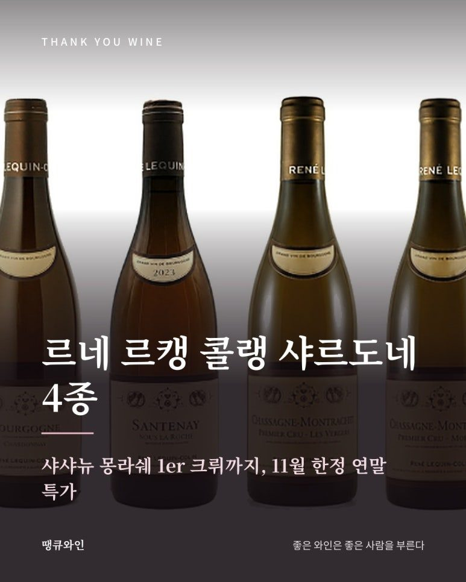
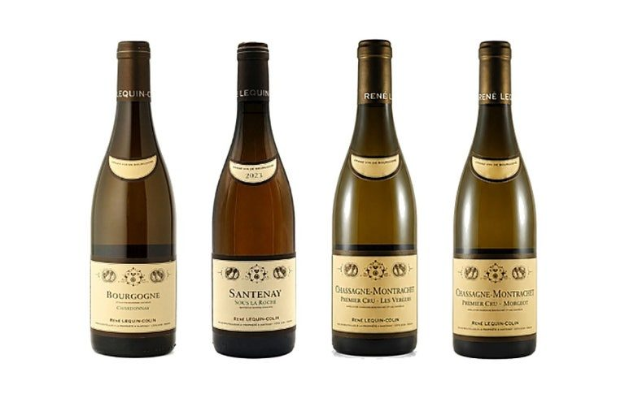
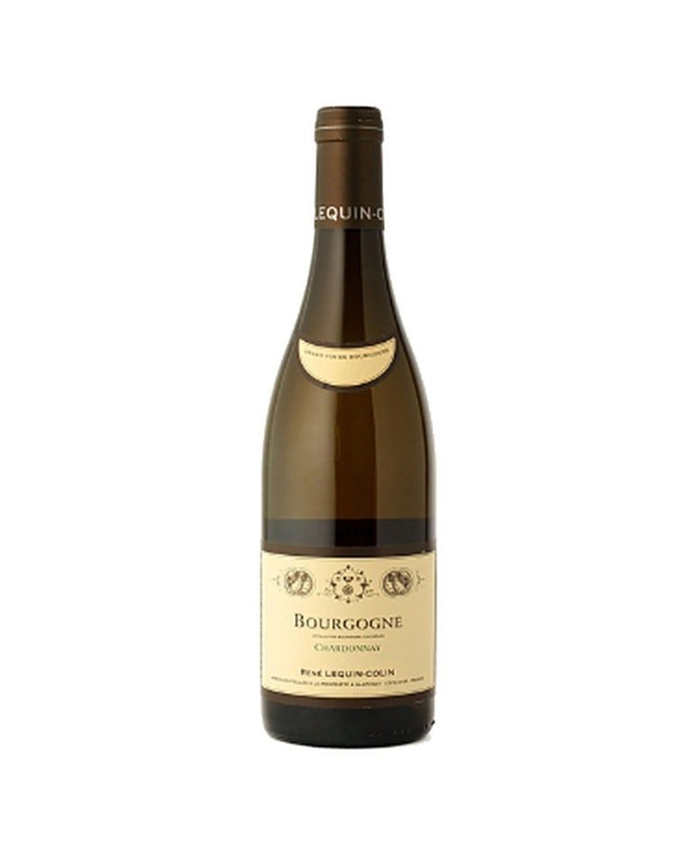
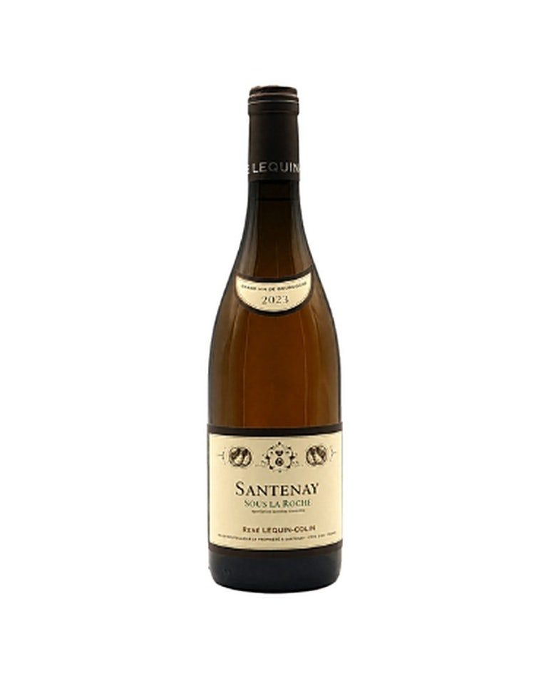
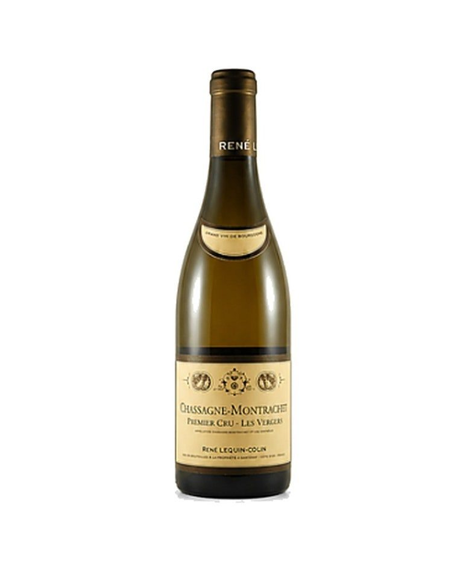
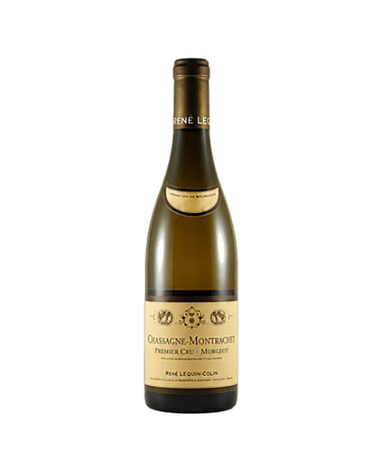

르네 르캥 콜랭 샤르도네 4종
샤샤뉴 몽라쉐 1er 크뤼까지, 11월 한정 연말 특가
연말 모임에 화이트 와인 한 병을 제대로 준비하고 싶으시다면, 이번 달은 부르고뉴 샤르도네를 눈여겨보실 때입니다.
연말 모임에 화이트 와인 한 병을 제대로 준비하고 싶으시다면, 이번 달은 부르고뉴 샤르도네를 눈여겨보실 때입니다.
부르고뉴 화이트를 좋아하는 분들 사이에서 '샤르도네의 신'이라는 별명으로 불리는 생산자가 있어요.
바로 도멘 르네 르캥 콜랭(Domaine René Lequin-Colin)입니다.
이 생산자의 와인 4종이 11월 한 달만 연말 특가로 들어옵니다.
특히 평소에는 할인이 거의 적용되지 않는 샤샤뉴 몽라쉐 1er 크뤼(프르미에 크뤼) 두 가지까지 이번 행사에 포함됐다는 점이 반가운 소식이에요.


▲ 왼쪽부터 부르고뉴 샤르도네, 상뜨네 수 라 로슈, 샤샤뉴 몽라쉐 1er 크뤼 '레 베제르', 샤샤뉴 몽라쉐 1er 크뤼 '모르조'
한눈에 보는 이번 연말 특가 와인 4종
- 행사 기간
- 11월 말일까지
① 부르고뉴 샤르도네 2023

르네 르캥 콜랭의 가장 기본이 되는 화이트입니다.
와인 앤 스피릿 매거진 자료에 따르면 상뜨네에 있는 두 구획의 샤르도네를 섞어 만들고, 절반은 오래된 오크통, 절반은 스테인리스 탱크에서 발효한 뒤 오크통에서 약 10개월 숙성합니다.
이 매거진은 2020 빈티지를 두고 '놀라운 부르고뉴 블랑(Astonishing Bourgogne Blanc)'이라는 제목으로 소개했어요.
- 향과 맛: 노란 사과, 산뜻하고 상쾌한 산미
- 피니시: 백차와 아몬드 같은 고소한 여운
- 이런 분께: 부르고뉴 화이트를 처음 경험해 보고 싶은 분, 연말 선물로 부담 없는 한 병을 찾는 분
부르고뉴 지역급이지만, 마을급 못지않은 완성도를 보여 주는 와인이에요.
② 상뜨네 수 라 로슈 2023

'수 라 로슈(Sous la Roche)'는 프랑스어로 '바위 아래'라는 뜻입니다.
도멘 시음실에서 바로 올려다보이는 언덕, 숲이 시작되는 바로 아래쪽에 있는 밭이에요.
수입 자료에 따르면 이 밭은 겉흙이 얇고 석회질이 아주 많습니다.
그래서 와인에 단단한 구조감과 함께, 석회질 토양에서 오는 은은한 부싯돌 같은 뉘앙스가 더해집니다.
- 스타일: 우아함, 구조감, 긴 여운
- 서빙 온도: 8~10도
- 비비노 평점: 4.1 (수입사 자료 기준)
상뜨네는 레드로 더 많이 알려진 마을이라, 상뜨네 샤르도네는 부르고뉴에서도 흔하지 않은 와인입니다.
뫼르소나 퓔리니보다 덜 알려져 있어서, 오히려 아는 분들이 조용히 찾는 마을급 화이트예요.
③ 샤샤뉴 몽라쉐 1er 크뤼 '레 베제르' 2023

여기서부터는 이번 행사의 주인공, 얼로케이션 품목입니다.
얼로케이션이란 생산량이 적어 수입사가 정해진 수량만 배정받는 와인을 말해요. 그래서 평소에는 할인 적용이 거의 되지 않습니다.
'레 베제르(Les Vergers)'는 '과수원'이라는 뜻의 이름을 가진 샤샤뉴 몽라쉐의 프르미에 크뤼 밭입니다.
미국 수입 자료(2017 빈티지)에 따르면 오크통에서 약 12개월 숙성하고, 새 오크통은 다섯 통 중 한 통 정도입니다.
- 향과 맛: 복숭아·살구 같은 핵과일, 시트러스, 브리오슈
- 질감: 크리미하고 풀바디, 구조감이 탄탄함
- 비비노 평점: 4.4 (수입사 자료 기준)
풍성하지만 무겁지 않은, 샤샤뉴 화이트의 정석에 가까운 와인이에요.
④ 샤샤뉴 몽라쉐 1er 크뤼 '모르조' 2023

'모르조(Morgeot)'는 샤샤뉴 몽라쉐 남쪽, 상뜨네와 맞닿은 쪽에 있는 넓은 프르미에 크뤼 밭입니다.
샤샤뉴의 1er 크뤼 가운데서도 힘 있고 묵직한 화이트로 잘 알려진 밭이에요.
미국 캘리포니아 와인 어드바이저스는 이 와인의 2020 빈티지에 98점을 주며 이렇게 표현했습니다.
열대 과일과 시트러스, 미네랄이 균형을 이루고
스파이시한 피니시가 이어지는, 숙성이 기대되는 와인
- 향: 버터, 향신료, 열대 과일
- 맛: 시트러스, 크리미한 오크, 미네랄
- 비비노 평점: 4.4 (수입사 자료 기준)
레 베제르가 우아하고 풍성한 쪽이라면, 모르조는 조금 더 단단하고 힘 있는 쪽이라고 생각하시면 됩니다.
두 병을 나란히 열어 비교해 보는 것도 연말에만 할 수 있는 즐거움이에요.
어떻게 고르면 좋을까?
- 부르고뉴 화이트가 처음이라면 → ① 부르고뉴 샤르도네
- 연말 모임에 한 단계 올린 화이트를 원한다면 → ② 상뜨네 수 라 로슈
- 특별한 날, 선물이나 기념일용이라면 → ③ 레 베제르
- 숙성 잠재력 있는 화이트를 셀러에 두고 싶다면 → ④ 모르조
어울리는 음식으로는 굴·가리비·새우 같은 해산물, 버터를 쓴 생선 요리, 크림 파스타, 닭이나 칠면조 구이처럼 연말 식탁에 자주 오르는 메뉴가 잘 맞습니다.
한식이라면 전, 생선구이, 수육과도 잘 어울려요.
서빙 온도는 10~12도 정도가 좋고, 1er 크뤼는 너무 차갑지 않게 마셔야 향이 훨씬 잘 열립니다.
자주 묻는 질문
얼로케이션 품목이 뭔가요?
생산량이 적어 수입사가 정해진 수량만 배정받는 와인이에요. 평소에는 할인이 거의 없는데, 이번 11월에만 특가가 적용됩니다.
언제까지 행사가 진행되나요?
11월 말일까지입니다. 일부 품목은 이미 완판되어 제외될 수 있어요.
지금 마셔도 되나요, 두었다 마셔야 하나요?
부르고뉴 샤르도네와 상뜨네는 지금 바로 즐기기 좋고, 두 가지 1er 크뤼는 지금도 좋지만 몇 년 두고 마셔도 좋은 와인입니다.
연말, 부르고뉴 화이트 한 병을 준비한다면
르네 르캥 콜랭은 상뜨네와 샤샤뉴 몽라쉐, 두 마을의 가문이 만나 만든 정직한 샤르도네 생산자입니다.
그래서 저는 이 와인들을
"화려함보다 맑음으로 기억되는 부르고뉴 샤르도네"
라고 소개하고 싶습니다.
평소 할인이 어려운 1er 크뤼까지 함께하는 기회는 자주 오지 않아요.
연말 모임이나 선물로 어떤 와인이 맞을지 고민되시면, 땡큐와인(성수동 매장)에 편하게 연락 주세요. 필요하실 때 함께 고민해 드릴게요.
이 글은 땡큐와인 네이버 블로그에 먼저 올린 글이에요.